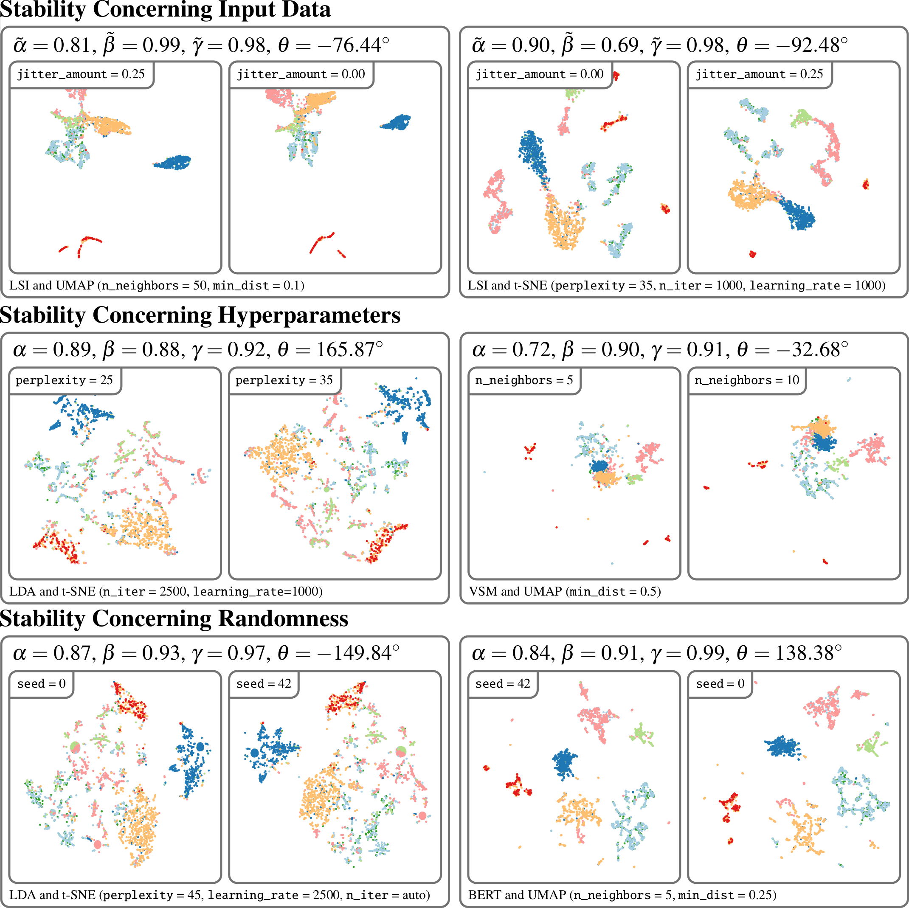
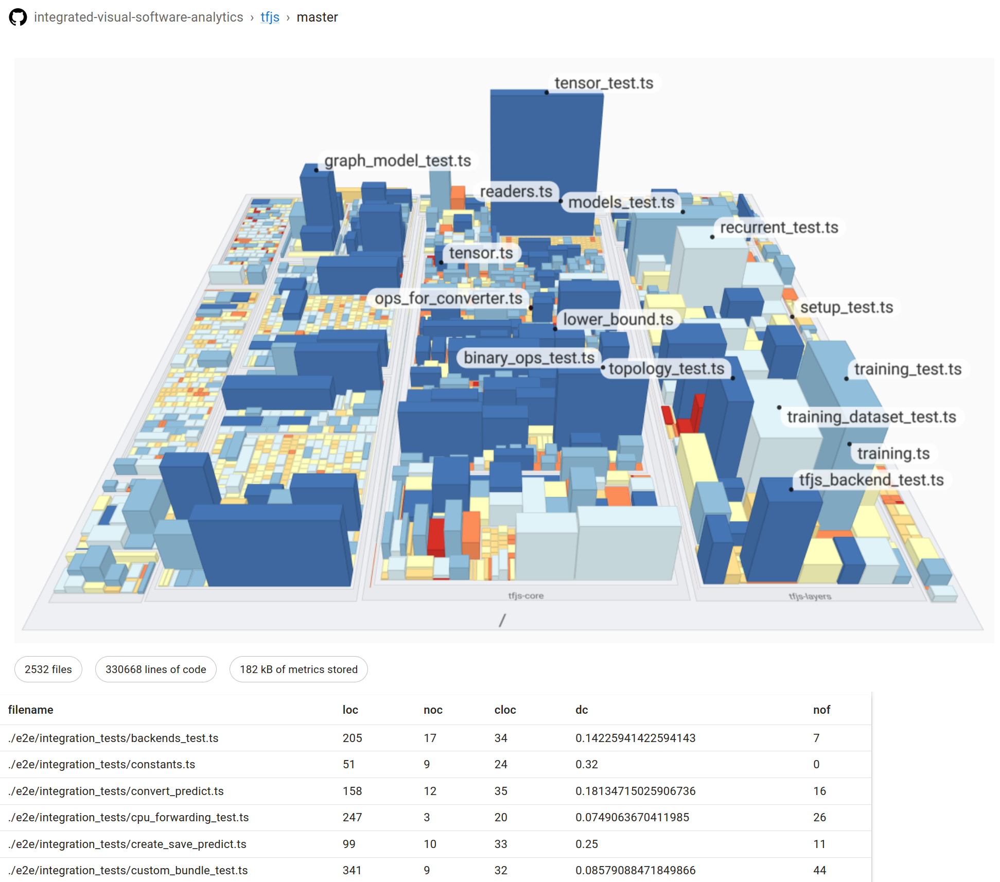
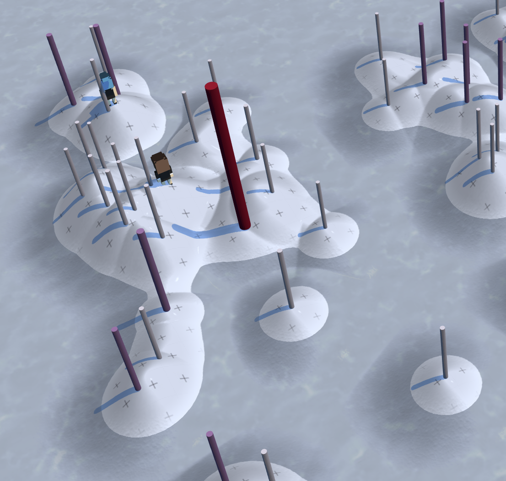
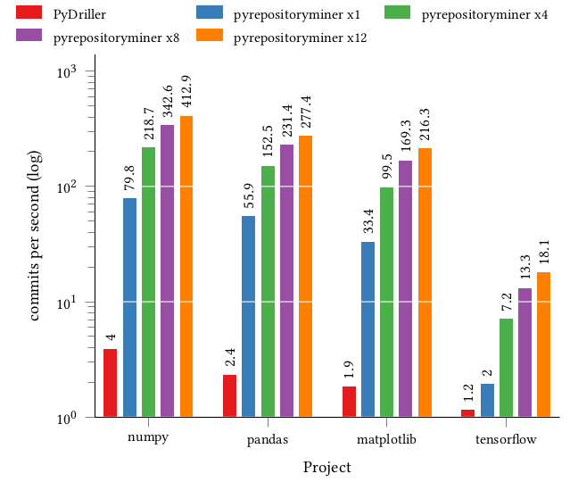
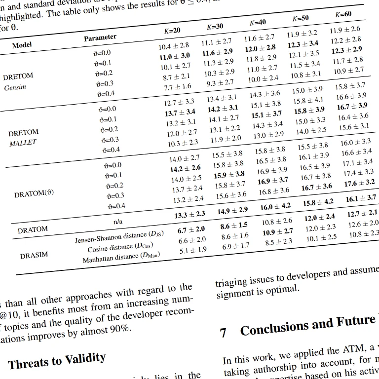
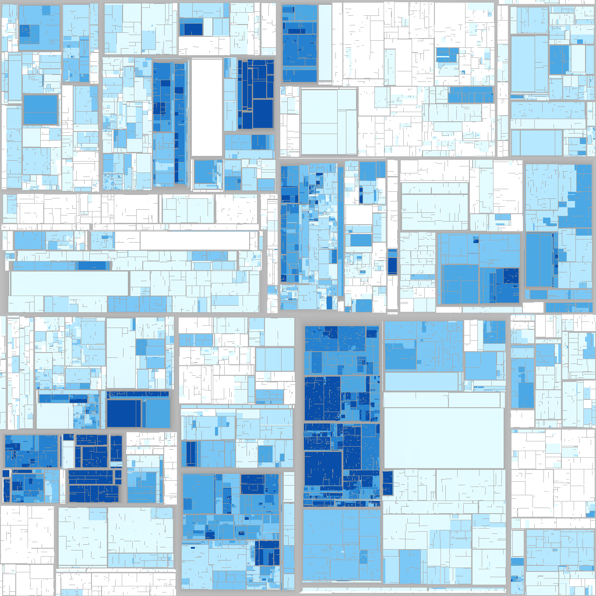
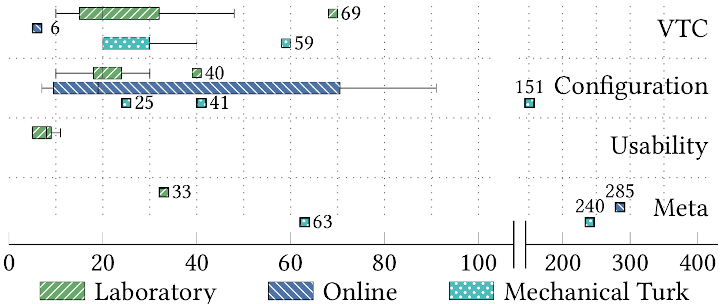
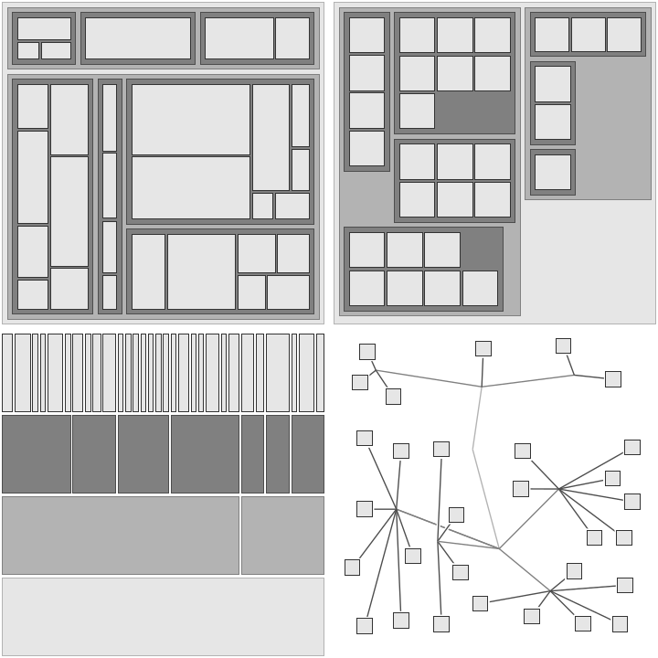

- Full Paper
A Large-Scale Sensitivity Analysis on Latent Embeddings and Dimensionality Reductions for Text Spatializations
Daniel Atzberger , Tim Cech , Willy Scheibel , Jürgen Döllner , Michael Behrisch , and Tobias Schreck
29th IEEE Conference on Visualization and Visual Analytics (VIS '24), IEEE Transactions on Visualization and Computer Graphics (TVCG)
In PressThe semantic similarity between documents of a text corpus can be visualized using map-like metaphors based on two-dimensional scatterplot layouts. These layouts result from a dimensionality reduction on the document-term matrix or a representation within a latent embedding, including topic models. Thereby, the resulting layout depends on the input data and hyperparameters of the dimensionality reduction and is therefore affected by changes in them. Furthermore, the resulting layout is affected by changes in the input data and hyperparameters of the dimensionality reduction. However, such changes to the layout require additional cognitive efforts from the user. In this work, we present a sensitivity study that analyzes the stability of these layouts concerning (1) changes in the text corpora, (2) changes in the hyperparameter, and (3) randomness in the initialization. Our approach has two stages: data measurement and data analysis. First, we derived layouts for the combination of three text corpora and six text embeddings and a grid-search-inspired hyperparameter selection of the dimensionality reductions. Afterward, we quantified the similarity of the layouts through ten metrics, concerning local and global structures and class separation. Second, we analyzed the resulting 42817 tabular data points in a descriptive statistical analysis. From this, we derived guidelines for informed decisions on the layout algorithm and highlight specific hyperparameter settings. We provide our implementation as a Git repository at https://github.com/hpicgs/Topic-Models-and-Dimensionality-Reduction-Sensitivity-Study and results as Zenodo archive at https://doi.org/10.5281/zenodo.12772898.
@article{acstrds2025-evaluation-tm-dr, author = {Atzberger, Daniel and Cech, Tim and Scheibel, Willy and Döllner, Jürgen and Behrisch, Michael and Schreck, Tobias}, title = {A Large-Scale Sensitivity Analysis on Latent Embeddings and Dimensionality Reductions for Text Spatializations}, journal = {Transactions on Visualization and Computer Graphics}, year = {2025}, publisher = {IEEE}, note = {in press}, }- Publisher Record
- Preprint
- Slides
- Github Project
- Results
- Full Paper
Instanced Rendering of Parameterized 3D Glyphs with Adaptive Level-of-Detail using three.js
Sandro Steeger , Daniel Atzberger , Willy Scheibel , and Jürgen Döllner
ACM 29th International Conference on 3D Web Technology (Web3D '24)
In PressThis paper contributes an optimized web-based rendering approach and implementation for parameterized meshes used as 3D glyphs for information visualization. The approach is based on geometry instancing in three.js with dynamic mesh selection and data-driven parameterization of the meshes. As an application example, we demonstrate a visualization prototype of a 2.5D information landscape that allows for exploration of source code modules of a software system. To this end, each data point is represented by a 3Dglyph selected from a glyph atlas according to its type and level-of-detail. We benchmark the approach against a straight-forward baseline implementation using regular three.js meshes by evaluating the overall run-time performance. For this, we used real-world datasets and synthetic larger variants with up to 50000 data points. The proposed approach achieves up to a 3000% higher median FPS count on laptop and desktop-class hardware and allows us to visualize up to 1 300% larger datasets interactively compared to the baseline implementation. This indicates that instanced rendering of parameterized meshes allows to provide interactive visualization using 3D glyphs for datasets of the next order of magnitude.
@inproceedings{steeger2024-instanced-glyph-rendering, author = {Steeger, Sandro and Atzberer, Daniel and Scheibel, Willy and Döllner, Jürgen}, title = {Instanced Rendering of Parameterized 3D Glyphs with Adaptive Level-of-Detail using three.js}, year = {2024}, series = {Web3D '24}, publisher = {ACM}, doi = {10.1145/3665318.3677171}, booktitle = {Proceedings of the 29th International Conference on 3D Web Technology}, note = {in press}, }- Publisher Record
- Author Version
- Slides
- Demo
- Github Project
- Performance Measurements
- Short Paper
Exploring High-Dimensional Data by Pointwise Filtering of Low-Dimensional Embeddings
Daniel Atzberger , Adrian Jobst , Willy Scheibel , and Jürgen Döllner
EG 42nd Conference on Computer Graphics & Visual Computing (CGVC '24)
In Press- BibTeX Pending
- Abstract
Dimensionality reductions are a class of unsupervised learning algorithms that aim to find a lower-dimensional embedding for a high-dimensional dataset while preserving local and global structures. By representing a high-dimensional dataset as a two-dimensional scatterplot, a user can explore structures within the dataset. However, dimensionality reductions inherit distortions that might result in false deductions. This work presents a visualization approach that combines a two-dimensional scatterplot derived from a dimensionality reduction with two pointwise filtering possibilities. Each point is associated with two pointwise metrics that quantify the correctness of its neighborhood and similarity to surrounding data points. By setting threshold for these two metrics, the user is supported in several scatterplot analytics tasks, e.g., class separation and outlier detection. We apply our visualization to a text corpus to detect interesting data points visually and discuss the findings.
- Publisher Record
- Slides
 Full Paper
Full PaperAn Approach and Evaluation of Visual Counterfactual Explanations Using Semantic Parts Metadata
Florence Böttger, Tim Cech , Willy Scheibel , and Jürgen Döllner
Preprint
In PressCounterfactual explanations are widely used to explain black-box models, with some approaches generating counterfactuals as a set of edits between two images. However, such explanations often do not guarantee coherence between the edits. We expand on an existing counterfactual creation approach by using semantic parts metadata that contains the locations of keypoints in the image. Using this metadata, we encourage counterfactuals that edit a given semantic part with other instances of that part. In a series of computational experiments on the CUB-200-2011 dataset, we determine that the proposed approach (1) decreases the number of edits by 0.1, (2) increases the keypoint accuracy of editing between two keypoints by at least 7.3 pp, and (3) increases the keypoint accuracy of editing between the same keypoint by at least 17.7 pp. In order to evaluate the impact of the generated explanations on human perception, we perform a user study where participants are aided by the explanations in a task of distinguishing two classes. This user study found that the proposed approach performs worse than the existing one w.r.t. human perception, with a loss in accuracy of at least 6.7 pp and up to 31.3 pp. Based on the mismatch between the computational experiments and the user study's results, we present a critical discussion on the choice of metrics as well as the design of the experiments.
@article{btwd2024-counterfactuals-extended, author = {Böttger, Florence and Cech, Tim and Scheibel, Willy and Döllner, Jürgen}, title = {An Approach and Evaluation of Visual Counterfactual Explanations Using Semantic Parts Metadata}, journal = {SN Computer Science}, publisher = {Springer}, year = {2024}, note = {in press}, }- Publisher Record
- Author Version
 Full Paper
Full PaperDetecting and Comparing LLM Capabilities to Human Writers through Linguistic Analysis
Lucas Liebe, Jannis Baum, Tim Cech , Willy Scheibel , and Jürgen Döllner
Preprint
In PressThe capabilities of Large Language Models (LLMs) to synthesize texts that imitate human language have increased rapidly. While many people adopt this technology, the potential harm caused through texts synthesized by machines is not fully assessed. Factual errors due to model hallucinations are especially impactful in media like news articles, which serves an important function in society. Therefore, users require support in detecting LLM-generation to decrease risks posed by machine text synthesis. For this purpose, we propose the tool unCover based on explainable linguistic analysis. The tools analyzes texts through stylometric writing style analysis for grammatical information and topic modeling for semantic information. Its stylometry is based on character, word and syntactic trigrams. By inspecting the proposed techniques, the differences of LLM-generation can be uncovered. These findings are used to explain how text synthesis can be detected. unCovers result is presented as a classification and visualization of the analysis. The final classification achieved an accuracy of 77.56% and a weighted F1-score of 86.51%. This is comparable to state-of-the-art products that detect LLMs while remaining technically explainable. German news articles are classified 1with an accuracy of 66.45%. The visualization supports the decision of the tool and can help users navigate complex texts. Through the promising results, unCover addresses challenges posed by AI content with new solutions. This is a step towards safely integrating LLMs into various areas of society.
@article{lbcsd2024-uncover-extended, author = {Liebe, Lucas and Baum, Jannis and Cech, Tim and Scheibel, Willy and Döllner, Jürgen}, title = {Detecting and Comparing LLM Capabilities to Human Writers through Linguistic Analysis}, journal = {SN Computer Science}, publisher = {Springer}, year = {2024}, note = {in press}, }- Publisher Record
- Author Version
- Preprint
Standardness Fogs Meaning: A Position Regarding the Informed Usage of Standard Datasets
Tim Cech , Ole Wegen , Daniel Atzberger , Rico Richter , Willy Scheibel , and Jürgen Döllner
arXiv CoRR Machine Learning (cs.LG); Human-Computer Interaction (cs.HC)Standard datasets are frequently used to train and evaluate Machine Learning models. However, the assumed standardness of these datasets leads to a lack of in-depth discussion on how their labels match the derived categories for the respective use case. In other words, the standardness of the datasets seems to fog coherency and applicability, thus impeding the trust in Machine Learning models. We propose to adopt Grounded Theory and Hypotheses Testing through Visualization as methods to evaluate the match between use case, derived categories, and labels of standard datasets. To showcase the approach, we apply it to the 20 Newsgroups dataset and the MNIST dataset. For the 20 Newsgroups dataset, we demonstrate that the labels are imprecise. Therefore, we argue that neither a Machine Learning model can learn a meaningful abstraction of derived categories nor one can draw conclusions from achieving high accuracy. For the MNIST dataset, we demonstrate how the labels can be confirmed to be defined well. We conclude that a concept of standardness of a dataset implies that there is a match between use case, derived categories, and class labels, as in the case of the MNIST dataset. We argue that this is necessary to learn a meaningful abstraction and, thus, improve trust in the Machine Learning model.
@online{cwarsd2024-standardness-fogs-meaning, author = {Cech, Tim and Wegen, Ole and Atzberger, Daniel and Richter, Rico and Scheibel, Willy and Döllner, Jürgen}, title = {Standardness Fogs Meaning: A Position Regarding the Informed Usage of Standard Datasets}, doi = {10.48550/arXiv.2406.13552}, eprinttype = {arxiv}, eprintclass = {cs.LG}, eprint = {2406.13552}, year = {2024}, } - Short Paper
A Low-Volatility Strategy based on Hedging a Quanto Perpetual Swap on BitMEX
Daniel Atzberger , Toshiko Matsui, Robert Henker, Willy Scheibel , Jürgen Döllner , and William Knottenbelt
IEEE 2nd International Workshop on Cryptocurrency Exchanges (CryptoEx '24)
In PressIn 2016, BitMEX introduced a novel type of crypto derivates: Perpetual Swaps, i.e., futures with an infinite term. Perpetual swaps provide a new strategic risk management tool for cryptocurrencies due to their custody-free nature, high leverage, and funding mechanism, but there has been little quantitative analysis on the their benefits. In this paper, we introduce a trading strategy that combines a Quanto Perpetual Swap with a spot position to benefit from the funding mechanism. We compare our strategy with a long-only investment in the underlying cryptocurrency and a similar strategy based on Linear Perpetual Swaps to evaluate their performances in a large-scale backtest covering the years 2021 and 2022. Our analysis shows that our strategy generates positive returns in bullish market phases of the underlying with lower volatility.
@inproceedings{atzberger2024-perpetual-swaps, author = {Atzberger, Daniel and Matsui, Toshiko and Henker, Robert and Scheibel, Willy and Döllner, Jürgen and Knottenbelt, William}, title = { A Low-Volatility Strategy based on Hedging a Quanto Perpetual Swap on BitMEX }, year = {2024}, series = {CryptoEx '24}, publisher = {IEEE}, booktitle = {Proceedings of the 2nd International Workshop on Cryptocurrency Exchanges}, note = {in press}, }- Publisher Record
- Author Version
- Extended Abstract
A Dashboard for Simplifying Machine Learning Models using Feature Importances and Spurious Correlation Analysis
Tim Cech , Erik Kohlros, Willy Scheibel , and Jürgen Döllner
26th EG Conference on Visualization (EuroVis '24)Machine Learning models underlie a trade-off between accurracy and explainability. Given a trained, complex model, we contribute a dashboard that supports the process to derive more explainable models, here: Fast-and-Frugal Trees, with further introspection using feature importances and spurious correlation analyses. The dashboard further allows to iterate over the feature selection and assess the trees' performance in comparison to the complex model.
@inproceedings{cksd2024-fisc, author = {Cech, Tim and Kohlros, Erik and Scheibel, Willy and Döllner, Jürgen}, title = {A Dashboard for Simplifying Machine Learning Models using Feature Importances and Spurious Correlation Analysis}, booktitle = {Proceedings of the 26th EG Conference on Visualization -- Posters}, series = {EuroVis Posters '24}, publisher = {EG}, isbn = {978-3-03868-258-5}, doi = {10.2312/evp.20241075}, year = {2024}, } - Extended Abstract
Interactive Human-guided Dimensionality Reduction using Landmark Positioning
Tim Cech , Christian Raue, Frederic Sadrieh, Willy Scheibel , and Jürgen Döllner
26th EG Conference on Visualization (EuroVis '24)Dimensionality Reduction (DR) techniques are used for projecting high-dimensional data onto a two-dimensional plane. One subclass of DR techniques are such techniques that utilize landmarks. Landmarks are a subset of the original data space that are projected by a slow and more precise technique. The other data points are then placed in relation to these landmarks with respect to their distance in the high-dimensional space. We propose a technique to refine the placement of the landmarks by a human user. We test two different techniques for unprojecting the movement of the low-dimensional landmarks into the high-dimensional data space. We showcase that such a movement can increase certain quality metrics while decreasing others. Therefore, users may use our technique to challenge their understanding of the high-dimensional data space.
@inproceedings{crssd2024-lmds, author = {Cech, Tim and Raue, Christian and Sadrieh, Frederic and Scheibel, Willy and Döllner, Jürgen}, title = {Interactive Human-guided Dimensionality Reduction using Landmark Positioning}, booktitle = {Proceedings of the 26th EG Conference on Visualization -- Posters}, series = {EuroVis Posters '24}, publisher = {EG}, isbn = {978-3-03868-258-5}, doi = {10.2312/evp.20241085}, year = {2024}, }  Survey Paper
Survey PaperA Survey on Non-photorealistic Rendering Approaches for Point Cloud Visualization
Ole Wegen , Willy Scheibel , Matthias Trapp , Rico Richter , and Jürgen Döllner
IEEE Transactions on Visualization and Computer Graphics (TVCG), 29th IEEE Conference on Visualization and Visual Analytics (VIS '24)Point clouds are widely used as a versatile representation of 3D entities and scenes for all scale domains and in a variety of application areas, serving as a fundamental data category to directly convey spatial features. However, due to point sparsity, lack of structure, irregular distribution, and acquisition-related inaccuracies, results of point cloud visualization are often subject to visual complexity and ambiguity. In this regard, non-photorealistic rendering can improve visual communication by reducing the cognitive effort required to understand an image or scene and by directing attention to important features. In the last 20 years, this has been demonstrated by various non-photorealistic rendering approaches that were proposed to target point clouds specifically. However, they do not use a common language or structure for assessment which complicates comparison and selection. Further, recent developments regarding point cloud characteristics and processing, such as massive data size or web-based rendering are rarely considered. To address these issues, we present a survey on non-photorealistic rendering approaches for point cloud visualization, providing an overview of the current state of research. We derive a structure for the assessment of approaches, proposing seven primary dimensions for the categorization regarding intended goals, data requirements, used techniques, and mode of operation. We then systematically assess corresponding approaches and utilize this classification to identify trends and research gaps, motivating future research in the development of effective non-photorealistic point cloud rendering methods.
@article{wstrd2024-point-cloud-npr, author = {Wegen, Ole and Scheibel, Willy and Trapp, Matthias and Richter, Rico and Döllner, Jürgen}, title = {A Survey on Non-photorealistic Rendering Approaches for Point Cloud Visualization}, journal = {Transactions on Visualization and Computer Graphics}, year = {2024}, publisher = {IEEE}, doi = {10.1109/TVCG.2024.3402610}, note = {in press}, }- Full Paper
Athena: Smart Order Routing on Centralized Crypto Exchanges using a Unified Order Book
Robert Henker, Daniel Atzberger , Jan Ole Vollmer, Willy Scheibel , Jürgen Döllner , and Markus Bick
Wiley International Journal of Network Management (JNEM)Most cryptocurrency spot trading occurs on centralized crypto exchanges, where offers for buying and selling are organized via an order book. In liquid markets, the price achieved for buying and selling deviates only slightly from the assumed reference price, i.e., trading is associated with low implicit costs. However, compared to traditional finance crypto markets are still illiquid and consequently the reduction of implicit costs is crucial for any trading strategy and of high interest, especially for institutional investors. This paper describes the design and implementation of Athena, a system that automatically splits orders across multiple exchanges to minimize implicit costs. For this purpose, order books are collected from several centralized crypto exchanges and merged into an internal unified order book. In addition to price and quantity, the entries in the unified order book are enriched with information about the exchange. This enables a smart order routing algorithm to split an order into several slices and execute these on several exchanges to reduce implicit costs and achieve a better price.
@article{henker2024-athena, author = {Henker, Robert and Atzberger, Daniel and Vollmer, Jan Ole and Scheibel, Willy and Döllner, Jürgen and Bick, Markus}, title = { Athena: Smart Order Routing on Centralized Crypto Exchanges using a Unified Order Book }, year = {2024}, journal = {International Journal of Network Management}, publisher = {Wiley}, doi = {10.1002/nem.2266}, pages = {e2266:1--19}, } - Short Paper
Bringing Objects to Life: Supporting Program Comprehension through Animated 2.5D Object Maps from Program Traces
Christoph Thiede, Willy Scheibel , and Jürgen Döllner
SciTePress 15th International Conference on Information Visualization Theory and Applications (IVAPP '23)Program comprehension is a key activity in software development. Several visualization approaches such as software maps have been proposed to support programmers in exploring the architecture of software systems. However, for the exploration of program behavior, programmers still rely on traditional code browsing and debugging tools to build a mental model of a system's behavior. We propose a novel approach to visualizing program behavior through animated 2.5D object maps that depict particular objects and their interactions from a program trace. We describe our implementation and evaluate it for different program traces through an experience report and performance measurements. Our results indicate that our approach can benefit program comprehension tasks, but further research is needed to improve scalability and usability.
@inproceedings{tsd2024-object-maps, author = {Thiede, Christoph and Scheibel, Willy and Döllner, Jürgen}, title = {Bringing Objects to Life: Supporting Program Comprehension through Animated 2.5D Object Maps from Program Traces}, booktitle = {Proceedings of the 19th International Joint Conference on Computer Vision, Imaging and Computer Graphics Theory and Applications -- Volume 1: GRAPP, HUCAPP and IVAPP}, year = {2024}, series = {IVAPP '24}, publisher = {SciTePress}, organization = {INSTICC}, isbn = {978-989-758-679-8}, issn = {2184-4321}, pages = {661--669}, doi = {10.5220/0012393900003660}, }  Full Paper
Full PaperQuantifying Topic Model Influence on Text Layouts based on Dimensionality Reductions
Daniel Atzberger , Tim Cech , Willy Scheibel , Jürgen Döllner , and Tobias Schreck
Best Paper Award
SciTePress 15th International Conference on Information Visualization Theory and Applications (IVAPP '23)Text spatializations for text corpora often rely on two-dimensional scatter plots generated from topic models and dimensionality reductions. Topic models are unsupervised learning algorithms that identify clusters, so-called topics, within a corpus, representing the underlying concepts. Furthermore, topic models transform documents into vectors, capturing their association with topics. A subsequent dimensionality reduction creates a two-dimensional scatter plot, illustrating semantic similarity between the documents. A recent study by Atzberger et al. has shown that topic models are beneficial for generating two-dimensional layouts. However, in their study, the hyperparameters of the topic models are fixed, and thus the study does not analyze the impact of the topic models' quality on the resulting layout. Following the methodology of Atzberger et al., we present a comprehensive benchmark comprising (1) text corpora, (2) layout algorithms based on topic models and dimensionality reductions, (3) quality metrics for assessing topic models, and (4) metrics for evaluating two-dimensional layouts' accuracy and cluster separation. Our study involves an exhaustive evaluation of numerous parameter configurations, yielding a dataset that quantifies the quality of each dataset-layout algorithm combination. Through a rigorous analysis of this dataset, we derive practical guidelines for effectively employing topic models in text spatializations. As a main result, we conclude that the quality of a topic model measured by coherence is positively correlated to the layout quality in the case of Latent Semantic Indexing and Non-Negative Matrix Factorization.
@inproceedings{acsds2024-topic-model-influence, author = {Atzberger, Daniel and Cech, Tim and Scheibel, Willy and Döllner, Jürgen and Schreck, Tobias}, title = {Quantifying Topic Model Influence on Text Layouts based on Dimensionality Reductions}, booktitle = {Proceedings of the 19th International Joint Conference on Computer Vision, Imaging and Computer Graphics Theory and Applications -- Volume 1: GRAPP, HUCAPP and IVAPP}, year = {2024}, series = {IVAPP '24}, publisher = {SciTePress}, organization = {INSTICC}, isbn = {978-989-758-679-8}, issn = {2184-4321}, pages = {593--602}, doi = {10.5220/0012391100003660}, }- Full Paper
Integrated Visual Software Analytics on the GitHub Platform
Willy Scheibel , Jasper Blum, Franziska Lauterbach, Daniel Atzberger , and Jürgen Döllner
Issue Cover
MDPI ComputersReadily available software analysis and analytics tools are often operated within external services, where the measured software analysis data is kept internally and no external access to the data is available. We propose an approach to integrate visual software analysis on the GitHub platform by leveraging GitHub Actions and the GitHub API, covering both analysis and visualization. The process is to perform software analysis for each commit, e.g., static source code complexity metrics, and augment the commit by the resulting data, stored as git objects within the same repository. We show that this approach is feasible by integrating it into 64 open source TypeScript projects. Further, we analyze the impact on Continuous Integration (CI) run time and repository storage. The stored software analysis data is externally accessible to allow for visualization tools, such as software maps. The effort to integrate our approach is limited to enabling the analysis component within the a project's CI on GitHub and embed an HTML snippet into the project's website for visualization. This enables a large amount of projects to have access to software analysis as well as provide means to communicate the current status of a project.
@article{sblad2024-githubembedded, author = {Scheibel, Willy and Blum, Jasper and Lauterbach, Franziska and Atzberger, Daniel and Döllner, Jürgen}, title = {Integrated Visual Software Analytics on the GitHub Platform}, year = {2024}, journal = {Computers}, volume = {13}, number = {2}, pages = {33:1--23}, doi = {10.3390/computers13020033}, publisher = {MDPI}, }
- Full Paper
Visual Counterfactual Explanations Using Semantic Part Locations
Florence Böttger, Tim Cech , Willy Scheibel , and Jürgen Döllner
Best Student Paper Award
SciTePress 15th International Conference on Knowledge Discovery and Information Retrieval (KDIR '23)As machine learning models are becoming more widespread and see use in high-stake decisions, the explainability of these decisions is getting more relevant. One approach for explainability are counterfactual explanations. They are defined as changes to a data point such that it appears as a different class. Their close connection to the original dataset aids their explainability. However, existing methods of creating counterfacual explanations often rely on other machine learning models, which adds an additional layer of opacity to the explanations. We propose additions to an established pipeline for creating visual counterfacual explanations by using an inherently explainable algorithm that does not rely on external models. Using annotated semantic part locations, we replace parts of the counterfactual creation process. We evaluate the approach on the CUB-200-2011 dataset. Our approach outperforms the previous results: we improve (1) the average number of edits by 0.1 edits, (2) the key point accuracy of editing within any semantic parts of the image by an average of at least 7 percentage points, and (3) the key point accuracy of editing the same semantic parts by at least 17 percentage points.
@inproceedings{btwd2023-counterfactuals, author = {Böttger, Florence and Cech, Tim and Scheibel, Willy and Döllner, Jürgen}, title = {Visual Counterfactual Explanations Using Semantic Part Locations}, booktitle = {Proceedings of the 15th International Conference on Knowledge Discovery and Information Retrieval}, series = {KDIR '23}, publisher = {SciTePress}, organization = {INSTICC}, year = {2023}, pages = {63--74}, isbn = {978-989-758-671-2}, issn = {2184-3228}, doi = {10.5220/0012179000003598}, } - Full Paper
unCover: Identifying AI Generated News Articles by Linguistic Analysis and Visualization
Lucas Liebe, Jannis Baum, Tilman Schütze, Tim Cech , Willy Scheibel , and Jürgen Döllner
Candidate for Best Paper
SciTePress 15th International Conference on Knowledge Discovery and Information Retrieval (KDIR '23)Text synthesis tools are becoming increasingly popular and better at mimicking human language. In trustsensitive decisions, such as plagiarism and fraud detection, identifying AI-generated texts poses larger difficulties: decisions need to be made explainable to ensure trust and accountability. To support users in identifying AI-generated texts, we propose the tool UNCOVER. The tool analyses texts through three explainable linguistic approaches: Stylometric writing style analysis, topic modeling, and entity recognition. The result of the tool is a decision and visualizations on the analysis results. We evaluate the tool on news articles by means of accuracy of the decision and an expert study with 13 participants. The final prediction is based on classification of stylometric and evolving topic analysis. It achieved an accuracy of 70.4% and a weighted F1-score of 85.6%. The participants preferred to base their assessment on the prediction and the topic graph. However, they found the entity recognition to be an ineffective indicator. Moreover, five participants highlighted the explainable aspects of UNCOVER and overall the participants achieved 69% true classifications. Eight participants expressed interest to continue using unCover for identifying AI-generated texts.
@inproceedings{lbscsd2023-uncover, author = {Liebe, Lucas and Baum, Jannis and Schütze, Tilman and Cech, Tim and Scheibel, Willy and Döllner, Jürgen}, title = {\textscunCover: Identifying AI Generated News Articles by Linguistic Analysis and Visualization}, booktitle = {Proceedings of the 15th International Conference on Knowledge Discovery and Information Retrieval}, series = {KDIR '23}, publisher = {SciTePress}, organization = {INSTICC}, year = {2023}, pages = {39--50}, isbn = {978-989-758-671-2}, issn = {2184-3228}, doi = {10.5220/0012163300003598}, }  Full Paper
Full PaperLarge-Scale Evaluation of Topic Models and Dimensionality Reduction Methods for 2D Text Spatialization
Daniel Atzberger , Tim Cech , Matthias Trapp , Rico Richter , Willy Scheibel , Jürgen Döllner , and Tobias Schreck
28th IEEE Conference on Visualization and Visual Analytics (VIS '23), IEEE Transactions on Visualization and Computer Graphics (TVCG)Topic models are a class of unsupervised learning algorithms for detecting the semantic structure within a text corpus. Together with a subsequent dimensionality reduction algorithm, topic models can be used for deriving spatializations for text corpora as two-dimensional scatter plots, reflecting semantic similarity between the documents and supporting corpus analysis. Although the choice of the topic model, the dimensionality reduction, and their underlying hyperparameters significantly impact the resulting layout, it is unknown which particular combinations result in high-quality layouts with respect to accuracy and perception metrics. To investigate the effectiveness of topic models and dimensionality reduction methods for the spatialization of corpora as two-dimensional scatter plots (or basis for landscape-type visualizations), we present a large-scale, benchmark-based computational evaluation. Our evaluation consists of (1) a set of corpora, (2) a set of layout algorithms that are combinations of topic models and dimensionality reductions, and (3) quality metrics for quantifying the resulting layout. The corpora are given as document-term matrices, and each document is assigned to a thematic class. The chosen metrics quantify the preservation of local and global properties and the perceptual effectiveness of the two-dimensional scatter plots. By evaluating the benchmark on a computing cluster, we derived a multivariate dataset with over 45000 individual layouts and corresponding quality metrics. Based on the results, we propose guidelines for the effective design of text spatializations that are based on topic models and dimensionality reductions. As a main result, we show that interpretable topic models are beneficial for capturing the structure of text corpora. We furthermore recommend the use of t-SNE as a subsequent dimensionality reduction.
@article{acstrds2023-evaluation-tm-dr, author = {Atzberger, Daniel and Cech, Tim and Trapp, Matthias and Richter, Rico and Scheibel, Willy and Döllner, Jürgen and Schreck, Tobias}, title = {Large-Scale Evaluation of Topic Models and Dimensionality Reduction Methods for 2D Text Spatialization}, journal = {Transactions on Visualization and Computer Graphics}, year = {2024}, publisher = {IEEE}, doi = {10.1109/TVCG.2023.3326569}, volume = {30}, number = {1}, pages = {902--912}, }- Extended Abstract
A Dashboard for Interactive Convolutional Neural Network Training And Validation Through Saliency Maps
Tim Cech , Furkan Simsek, Willy Scheibel , and Jürgen Döllner
25th EG Conference on Visualization (EuroVis '23)Quali-quantitative methods provide ways for interrogating Convolutional Neural Networks (CNN). For it, we propose a dashboard using a quali-quantitative method based on quantitative metrics and saliency maps. By those means, a user can discover patterns during the training of a CNN. With this, they can adapt the training hyperparameters of the model, obtaining a CNN that learned patterns desired by the user. Furthermore, they neglect CNNs which learned undesirable patterns. This improves users' agency over the model training process.
@inproceedings{cssd2023-saliencnn, author = {Cech, Tim and Simsek, Furkan and Scheibel, Willy and Döllner, Jürgen}, title = {A Dashboard for Interactive Convolutional Neural Network Training And Validation Through Saliency Maps}, booktitle = {Proceedings of the 25th EG Conference on Visualization -- Posters}, series = {EuroVis Posters '23}, pages = {5--7}, isbn = {978-3-03868-220-2}, doi = {10.2312/evp.20231054}, publisher = {EG}, year = {2023}, } - Extended Abstract
Constructing Hierarchical Continuity in Hilbert & Moore Treemaps
Willy Scheibel and Jürgen Döllner
25th EG Conference on Visualization (EuroVis '23)The Hilbert and Moore treemap layout algorithms are based on the space-filling Hilbert and Moore curves, respectively, to map tree-structured datasets to a 2D treemap layout. Considering multiple snapshots of a time-variant dataset, one of the design goals for Hilbert and Moore treemaps is layout stability, i.e., low changes in the layout for low changes in the underlying tree-structured data. For this, their underlying space-filling curve is expected to be continuous across all nodes and hierarchy levels, which has to be considered throughout the layouting process. We propose optimizations to subdivision templates, their orientation, and discuss the continuity of the underlying space-filling curve. We show real-world examples of Hilbert and Moore treemaps for small and large datasets with continuous space-filling curves, allowing for improved layout stability.
@inproceedings{sd2023-hilbertmoorecontinuous, author = {Scheibel, Willy and Döllner, Jürgen}, title = {Constructing Hierarchical Continuity in Hilbert \& Moore Treemaps}, booktitle = {Proceedings of the 25th EG Conference on Visualization -- Posters}, series = {EuroVis Posters '23}, pages = {29--31}, isbn = {978-3-03868-220-2}, doi = {10.2312/evp.20231060}, publisher = {EG}, year = {2023}, } - Full Paper
Outlier Mining Techniques for Software Defect Prediction
Tim Cech , Daniel Atzberger , Willy Scheibel , Sanjay Misra, and Jürgen Döllner
Springer 15th International Conference on Software Quality (SWQD '23)Software metrics measure aspects related to the quality of software. Using software metrics as a method of quantification of software, various approaches were proposed for locating defect-prone source code units within software projects. Most of these approaches rely on supervised learning algorithms, which require labeled data for adjusting their parameters during the learning phase. Usually, such labeled training data is not available. Unsupervised algorithms do not require training data and can therefore help to overcome this limitation. In this work, we evaluate the effect of unsupervised learning - especially outlier mining algorithms - for the task of defect prediction, i.e., locating defect-prone source code units. We investigate the effect of various class balancing and feature compressing techniques as preprocessing steps and show how sliding windows can be used to capture time series of source code metrics. We evaluate the Isolation Forest and Local Outlier Factor, as representants of outlier mining techniques. Our experiments on three publicly available datasets, containing a total of 11 software projects, indicate that the consideration of time series can improve static examinations by up to 3%. The results further show that supervised algorithms can outperform unsupervised approaches on all projects. Among all unsupervised approaches, the Isolation Forest achieves the best accuracy on 10 out of 11 projects.
@incollection{cech2023-defect-prediction, author = {Cech, Tim and Atzberger, Daniel and Scheibel, Willy and Misra, Sanjay and Döllner, Jürgen}, title = {Outlier Mining Techniques for Software Defect Prediction}, year = {2023}, publisher = {Springer}, booktitle = {SWQD 2023: Software Quality: Higher Software Quality through Zero Waste Development}, pages = {41--60}, doi = {10.1007/978-3-031-31488-9_3}, series = {Lecture Notes in Business Information Processing}, volume = {472}, } - Short Paper
OrderBookVis: A Visualization Approach for Comparing Order Books from Centralized Crypto Exchanges
Adrian Jobst , Daniel Atzberger , Robert Henker, Willy Scheibel , and Jürgen Döllner
IEEE 1st International Workshop on Cryptocurrency Exchanges (CryptoEx '23)Trading for a currency pair on centralized crypto exchanges is organized via an order book, which collects all open buy and sell orders at any given time and thus forms the basis for price formation. Usually, the exchanges provide basic visualizations, which show the accumulated buy and sell volume in an animated 2D representation. However, this visualization does not allow the user to compare different order books, e.g., several order book snapshots. In this work, we present OrderBookVis, a 2.5D representation that shows a discrete set of order books comparatively. For this purpose, the individual snapshots are displayed as a 2D representation as usual and placed one after the other on a 2D reference plane. As possible use cases, we discuss the analysis of the temporal evolution of the order book for a fixed market and the comparison of different order books across multiple markets.
@inproceedings{jobst2023-orderbookvis, author = {Jobst, Adrian and Atzberger, Daniel and Henker, Robert and Scheibel, Willy and Döllner, Jürgen}, title = { OrderBookVis: A Visualization Approach for Comparing Order Books from Centralized Crypto Exchanges }, year = {2023}, series = {CryptoEx '23}, publisher = {IEEE}, booktitle = {Proceedings of the 1st International Workshop on Cryptocurrency Exchanges}, doi = {10.1109/ICBC56567.2023.10174944}, } - Full Paper
Examining Liquidity of Exchanges and Assets and the Impact of External Events in Centralized Crypto Markets: A 2022 Study
Adrian Jobst , Daniel Atzberger , Robert Henker, Jan Ole Vollmer, Willy Scheibel , and Jürgen Döllner
IEEE 1st International Workshop on Cryptocurrency Exchanges (CryptoEx '23)Most cryptocurrencies are bought and sold on centralized exchanges that manage supply and demand via an order book. Besides trading fees, the high liquidity of a market is the most relevant reason for choosing one exchange over the other. However, as the different liquidity measures rely on the order book, external events that cause people to sell or buy a cryptocurrency can significantly impact a market's liquidity. To investigate the effect of external events on liquidity, we measure various liquidity measures for nine different order books comprising three currency pairs across three exchanges covering the entire year 2022. The resulting multivariate time series is then analyzed using different correlations. From the results, we can infer that as a cryptocurrency's market capitalization and the exchange's trading volume increases, so does its liquidity. At the same time, only a moderate correlation of liquidity between exchanges can be observed. Furthermore, our statistical observations show that external events, particularly the events around FTX and the Terra Luna crash, caused significant changes in liquidity. However, depending on the exchange's size and the cryptocurrency's market cap, the liquidity took a shorter or longer time to recover.
@inproceedings{jobst2023-liquidityanalysis, author = {Jobst, Adrian and Atzberger, Daniel and Henker, Robert and Vollmer, Jan Ole and Scheibel, Willy and Döllner, Jürgen}, title = {Examining Liquidity of Exchanges and Assets and the Impact of External Events in Centralized Crypto Markets: A 2022 Study}, year = {2023}, series = {CryptoEx '23}, publisher = {IEEE}, booktitle = {Proceedings of the 1st International Workshop on Cryptocurrency Exchanges}, doi = {10.1109/ICBC56567.2023.10174905}, } - Short Paper
Real Estate Tokenization in Germany: Market Analysis and Concept of a Regulatory and Technical Solution
Robert Henker, Daniel Atzberger , Willy Scheibel , and Jürgen Döllner
IEEE 5th International Conference on Blockchain and Cryptocurrency (ICBC '23)Real estate is the largest asset class and is equally popular with professional and retail investors. However, this asset class has the disadvantage that it is very illiquid, and investments have a high entry barrier in terms of equity. The adoption of the Electronic Securities Act in 2021 by the German Bundestag has created the legal framework for tokenizing real estate assets and their management using digital ledger technology in Germany. In this paper we describe a business concept for managing ownership and business transactions for real estate in Germany using blockchain technology. Besides its possibilities, we present a market analysis that comprises existing approaches and discusses legal limitations specific to Germany.
@inproceedings{henker2023-realestatetokenization, author = {Henker, Robert and Atzberger, Daniel and Scheibel, Willy and Döllner, Jürgen}, title = {Real Estate Tokenization in Germany: Market Analysis and Concept of a Regulatory and Technical Solution}, year = {2023}, series = {ICBC '23}, publisher = {IEEE}, booktitle = {Proceedings of the 5th International Conference on Blockchain and Cryptocurrency}, doi = {10.1109/ICBC56567.2023.10174954}, } - Full Paper
Hephaistos: A Management System for Massive Order Book Data from Multiple Centralized Crypto Exchanges with an Internal Unified Order Book
Robert Henker, Daniel Atzberger , Jan Ole Vollmer, Willy Scheibel , Jürgen Döllner , and Markus Bick
IEEE 1st International Workshop on Cryptocurrency Exchanges (CryptoEx '23)Offers to buy and sell cryptocurrencies on exchanges are collected in an order book as pairs of amount and price provided with a timestamp. Contrary to tick data, which only reflects the last transaction price on an exchange, the order book reflects the market’s actual price information and the available volume. Until now, no system has been presented that can capture many different order books across several markets. This paper presents Hephaistos, a system for processing, harmonizing, and storing massive spot order book data from 22 centralized crypto exchanges and 55 currency pairs. After collecting the data, Hephaistos aggregates several order books in a so-called Unified Order Book, which is the foundation for a Smart Order Routing algorithm. As a result an order is splitted across several exchanges, which results in a better execution price. As component of a high-frequency trading system, Hephaistos captures 32% of the total daily spot trading volume. We provide examples with data from two exchanges that show that the Smart Order Routing algorithm significantly reduces the slippage.
@inproceedings{henker2023-hephaistos, author = {Henker, Robert and Atzberger, Daniel and Vollmer, Jan Ole and Scheibel, Willy and Döllner, Jürgen and Bick, Markus}, title = { Hephaistos: A Management System for Massive Order Book Data from Multiple Centralized Crypto Exchanges with an Internal Unified Order Book }, year = {2023}, series = {CryptoEx '23}, publisher = {IEEE}, booktitle = {Proceedings of the 1st International Workshop on Cryptocurrency Exchanges}, doi = {10.1109/ICBC56567.2023.10174923}, } - Short Paper
Detecting Outliers in CI/CD Pipeline Logs using Latent Dirichlet Allocation
Daniel Atzberger , Tim Cech , Willy Scheibel , Rico Richter , and Jürgen Döllner
SciTePress 18th International Conference on Evaluation of Novel Approaches to Software Engineering (ENASE '23)Continuous Integration and Continuous Delivery are best practices used during the DevOps phase. By using automated pipelines for building and testing small software changes, possible risks are intended to be detected early. Those pipelines continuously generate log events that are collected in semi-structured log files. In an industry context, these log files can amass 100,000 events and more. However, the relevant sections in these log files must be manually tagged by the user. This paper presents an online-learning approach for detecting relevant log events using Latent Dirichlet Allocation. After grouping a fixed number of log events in a document, our approach prunes the vocabulary to eliminate words without semantic meaning. A sequence of documents is then described as a discrete sequence by applying Latent Dirichlet Allocation, which allows the detection of outliers within the sequence. Our approach provides an explanation of the results by integrating the latent variables of the model. The approach is tested on log files that originate from a CI/CD pipeline of a large German company. Our results indicate that whether or not a log event is marked as an outlier heavily depends on the chosen hyperparameters of our model.
@inproceedings{acsd2023-log-outlier, author = {Atzberger, Daniel and Cech, Tim and Scheibel, Willy and Richter, Rico and Döllner, Jürgen}, title = {Detecting Outliers in CI/CD Pipeline Logs using Latent Dirichlet Allocation}, booktitle = {Proceedings of the 18th International Conference Evaluation of Novel Approaches to Software Engineering}, year = {2023}, series = {ENASE '23}, publisher = {SciTePress}, organization = {INSTICC}, doi = {10.5220/0011858500003464}, isbn = {978-989-758-647-7}, issn = {2184-4895}, pages = {461--468}, } - Chapter
Evaluating Probabilistic Topic Models for Bug Triaging Tasks
Daniel Atzberger , Jonathan Schneider, Willy Scheibel , Matthias Trapp , and Jürgen Döllner
Springer ENASE 2022: Evaluation of Novel Approaches to Software Engineering (ENASE 2022)During the software development process, occurring problems are collected and managed as bug reports using bug tracking systems. Usually, a bug report is specified by a title, a more detailed description, and additional categorical information, e.g., the affected component or the reporter. It is the task of the triage owner to assign open bug reports to developers with the required skills to fix them. However, the bug assignment task is time-consuming, especially in large software projects with many involved developers. This observation motivates using (semi-)automatic algorithms for assigning bugs to developers. Various approaches have been developed that rely on a machine learning model trained on historical bug reports. Thereby, the modeling of the textual components is mainly done using topic models, mainly Latent Dirichlet Allocation (LDA). Although different variants, inference techniques, and libraries for LDA exist and various hyperparameters can be specified, most works treat topic models as a black box without exploring them in detail. In this work, we extend a study of Atzberger and Schneider et al. on the use of the Author-Topic Model (ATM) for bug triaging tasks. We demonstrate the influence of the underlying topic model, the used library and inference techniques, and the hyperparameters on the bug triaging results. The results of our conducted experiments on a dataset from the Mozilla Firefox project provide guidelines for applying LDA for bug triaging tasks effectively.
@incollection{atzberger2023-probabilistic-models, author = {Atzberger, Daniel and Schneider, Jonathan and Scheibel, Willy and Trapp, Matthias and Döllner, Jürgen}, title = {Evaluating Probabilistic Topic Models for Bug Triaging Tasks}, booktitle = {ENASE 2022: Evaluation of Novel Approaches to Software Engineering}, publisher = {Springer}, year = {2023}, doi = {10.1007/978-3-031-36597-3_3}, series = {Communications in Computer and Information Science}, volume = {1829}, isbn = {978-3-031-36596-6}, pages = {44--69}, } - Short Paper
Evaluating Architectures and Hyperparameters of Self-supervised Network Projections
Tim Cech , Daniel Atzberger , Willy Scheibel , Rico Richter , and Jürgen Döllner
SciTePress 14th International Conference on Information Visualization Theory and Applications (IVAPP '23)Self-Supervised Network Projections (SSNP) are dimensionality reduction algorithms that produce low-dimensional layouts from high-dimensional data. By combining an autoencoder architecture with neighborhood information from a clustering algorithm, SSNP intend to learn an embedding that generates visually separated clusters. In this work, we extend an approach that uses cluster information as pseudo-labels for SSNP by taking outlier information into account. Furthermore, we investigate the influence of different autoencoders on the quality of the generated two-dimensional layouts. We report on two experiments on the autoencoder's architecture and hyperparameters, respectively, measuring nine metrics on eight labeled datasets from different domains, e.g., Natural Language Processing. The results indicate that the model's architecture and the choice of hyperparameter values can influence the layout with statistical significance, but none achieves the best result over all metrics. In addition, we found out that using outlier information for the pseudo-labeling approach can maintain global properties of the two-dimensional layout while trading-off local properties.
@inproceedings{casrd2023-evaluating-ssnp, author = {Cech, Tim and Atzberger, Daniel and Scheibel, Willy and Richter, Rico and Döllner, Jürgen}, title = {Evaluating Architectures and Hyperparameters of Self-supervised Network Projections}, booktitle = {Proceedings of the 18th International Joint Conference on Computer Vision, Imaging and Computer Graphics Theory and Applications -- Volume 3 IVAPP}, year = {2023}, series = {IVAPP '23}, publisher = {SciTePress}, organization = {INSTICC}, pages = {187--194}, doi = {10.5220/0011699700003417}, isbn = {978-989-758-634-7}, issn = {2184-4321}, } - Chapter
Visualization of Source Code Similarity using 2.5D Semantic Software Maps
Daniel Atzberger , Tim Cech , Willy Scheibel , Daniel Limberger , and Jürgen Döllner
Springer VISIGRAPP 2021: Computer Vision, Imaging and Computer Graphics Theory and Applications (VISIGRAPP 2021)For various program comprehension tasks, software visualization techniques can be beneficial by displaying aspects related to the behavior, structure, or evolution of software. In many cases, the question is related to the semantics of the source code files, e.g., the localization of files that implement specific features or the detection of files with similar semantics. This work presents a general software visualization technique for source code documents, which uses 3D glyphs placed on a two-dimensional reference plane. The relative positions of the glyphs captures their semantic relatedness. Our layout originates from applying Latent Dirichlet Allocation and Multidimensional Scaling on the comments and identifier names found in the source code files. Though different variants for 3D glyphs can be applied, we focus on cylinders, trees, and avatars. We discuss various mappings of data associated with source code documents to the visual variables of 3D glyphs for selected use cases and provide details on our visualization system.
@incollection{atzberger2023-semantic-software-maps, author = {Atzberger, Daniel and Cech, Tim and Scheibel, Willy and Limberger, Daniel and Döllner, Jürgen}, title = {Visualization of Source Code Similarity using 2.5D Semantic Software Maps}, booktitle = {VISIGRAPP 2021: Computer Vision, Imaging and Computer Graphics Theory and Applications}, publisher = {Springer}, year = {2023}, doi = {10.1007/978-3-031-25477-2_8}, isbn = {978-3-031-25477-2}, series = {Communications in Computer and Information Science}, volume = {1691}, pages = {162--182}, }
 Full Paper
Full PaperHardware-accelerated Rendering of Web-based 3D Scatter Plots with Projected Density Fields and Embedded Controls
Lukas Wagner , Daniel Limberger , Willy Scheibel , and Jürgen Döllner
Best Paper Award
ACM 27th International Conference on 3D Web Technology (Web3D '22)3D scatter plots depicting massive data suffer from occlusion, which makes it difficult to get an overview and perceive structure. This paper presents a technique that facilitates the comprehension of heavily occluded 3D scatter plots. Data points are projected to axial planes, creating x-ray-like 2D views that support the user in analyzing the data's density and layout. We showcase our open-source web application with a hardware-accelerated rendering component written in WebGL. It allows for interactive interaction, filtering, and navigation with datasets up to hundreds of thousands of nodes. The implementation is detailed and discussed with respect to challenges posed by API and performance limitations.
@inproceedings{wagner2022-scatterplot, author = {Wagner, Lukas and Limberger, Daniel and Scheibel, Willy and Döllner, Jürgen}, title = {Hardware-accelerated Rendering of Web-based 3D Scatter Plots with Projected Density Fields and Embedded Controls}, year = {2022}, series = {Web3D '22}, publisher = {ACM}, booktitle = {Proceedings of the 27th International Conference on 3D Web Technology}, doi = {10.1145/3564533.3564566}, pages = {1:1--5}, isbn = {9781450399142}, }- Short Paper
CodeCV: Mining Expertise of GitHub Users from Coding Activities
Daniel Atzberger , Nico Scordialo, Tim Cech , Willy Scheibel , Matthias Trapp , and Jürgen Döllner
IEEE 22nd International Working Conference on Source Code Analysis and Manipulation (SCAM '22)The number of software projects developed collaboratively on social coding platforms is steadily increasing. One of the motivations for developers to participate in open-source software development is to make their development activities easier accessible to potential employers, e.g., in the form of a resume for their interests and skills. However, manual review of source code activities is time-consuming and requires detailed knowledge of the technologies used. Existing approaches are limited to a small subset of actual source code activity and metadata and do not provide explanations for their results. In this work, we present CodeCV, an approach to analyzing the commit activities of a GitHub user concerning the use of programming languages, software libraries, and higher-level concepts, e.g., Machine Learning or Cryptocurrency. Skills in using software libraries and programming languages are analyzed based on syntactic structures in the source code. Based on Labeled Latent Dirichlet Allocation, an automatically generated corpus of GitHub projects is used to learn the concept-specific vocabulary in identifier names and comments. This enables the capture of expertise on abstract concepts from a user's commit history. CodeCV further explains the results through links to the relevant commits in an interactive web dashboard. We tested our system on selected GitHub users who mainly contribute to popular projects to demonstrate that our approach is able to capture developers' expertise effectively.
@inproceedings{ascstd2022-codecv, author = {Atzberger, Daniel and Scordialo, Nico and Cech, Tim and Scheibel, Willy and Trapp, Matthias and Döllner, Jürgen}, title = { CodeCV: Mining Expertise of GitHub Users from Coding Activities }, booktitle = {Proceedings of the 22nd International Working Conference on Source Code Analysis and Manipulation}, year = {2022}, series = {SCAM '22}, publisher = {IEEE}, doi = {10.1109/SCAM55253.2022.00021}, }  Full Paper
Full PaperProcedural Texture Patterns for Encoding Changes in Color in 2.5D Treemap Visualizations
Daniel Limberger , Willy Scheibel , Jan van Diecken, and Jürgen Döllner
Springer Journal of Visualization (JoVi)Treemaps depict tree-structured data while maintaining flexibility in mapping data to different visual variables. This work explores how changes in data mapped to color can be represented with rectangular 2.5D treemaps using procedural texture patterns. The patterns are designed to function for both static images and interactive visualizations with animated transitions. During rendering, the procedural texture patterns are superimposed onto the existing color mapping. We present a pattern catalog with seven exemplary patterns having different characteristics in representing the mapped data. This pattern catalog is implemented in a WebGL-based treemap rendering prototype and is evaluated using performance measurements and case studies on two software projects. As a result, this work extends the toolset of visual encodings for 2.5D treemaps by procedural texture patterns to represent changes in color. It serves as a starting point for user-centered evaluation.
@article{limberger2022-procedural-texture-patterns, author = {Limberger, Daniel and Scheibel, Willy and van Diecken, Jan and Döllner, Jürgen}, title = {Procedural Texture Patterns for Encoding Changes in Color in 2.5D Treemap Visualizations}, journal = {Journal of Visualization}, year = {2022}, doi = {10.1007/s12650-022-00874-3}, volume = {26}, pages = {317--333}, publisher = { Springer }, } Full Paper
Full PaperVisual Variables and Configuration of Software Maps
Daniel Limberger , Willy Scheibel , Jürgen Döllner , and Matthias Trapp
Springer Journal of Visualization (JoVi)Software maps provide a general-purpose interactive user interface and information display in software analytics. This paper classifies software maps as a containment-based treemap embedded into a 3D attribute space and introduces respective terminology. It provides a comprehensive overview of advanced visual metaphors and techniques, each suitable for interactive visual analytics tasks. The metaphors and techniques are briefly described, located within a visualization pipeline model, and considered within a software map design space. The general expressiveness and applicability of visual variables are detailed and discussed. Consequent applications and use cases w.r.t. different types of software system data and software engineering data are discussed, arguing for versatile use of software maps in visual software analytics.
@article{limberger2022-configuration-softwaremaps, author = {Limberger, Daniel and Scheibel, Willy and Döllner, Jürgen and Trapp, Matthias}, title = {Visual Variables and Configuration of Software Maps}, journal = {Journal of Visualization}, year = {2022}, doi = {10.1007/s12650-022-00868-1}, volume = {26}, pages = {249--274}, publisher = { Springer }, }- Extended Abstract
A Benchmark for the Use of Topic Models for Text Visualization Tasks
Daniel Atzberger , Tim Cech , Willy Scheibel , Daniel Limberger , Matthias Trapp , and Jürgen Döllner
ACM 15th International Symposium on Visual Information Communication and Interaction (VINCI '22)@inproceedings{atzberger2022-topicmodel-benchmark, author = {Atzberger, Daniel and Cech, Tim and Scheibel, Willy and Limberger, Daniel and Trapp, Matthias and Döllner, Jürgen}, title = {A Benchmark for the Use of Topic Models for Text Visualization Tasks}, booktitle = {Proceedings of the 15th International Symposium on Visual Information Communication and Interaction}, year = {2022}, series = {VINCI '22}, publisher = {ACM}, doi = {10.1145/3554944.3554961}, pages = {17:1--4}, } - Full Paper
Efficient GitHub Crawling using the GraphQL API
Adrian Jobst , Daniel Atzberger , Tim Cech , Willy Scheibel , Matthias Trapp , and Jürgen Döllner
Springer 22th International Conference on Computational Science and Its Applications (ICCSA '22)The number of publicly accessible software repositories on online platforms is growing rapidly. With more than 128 million public repositories (as of March 2020), GitHub is the world's largest platform for hosting and managing software projects. Where it used to be necessary to merge various data sources, it is now possible to access a wealth of data using the GitHub API alone. However, collecting and analyzing this data is not an easy endeavor. In this paper, we present Prometheus, a system for crawling and storing software repositories from GitHub. Compared to existing frameworks, Prometheus follows an event-driven microservice architecture. By separating functionality on the service level, there is no need to understand implementation details or use existing frameworks to extend or customize the system, only data. Prometheus consists of two components, one for fetching GitHub data and one for data storage which serves as a basis for future functionality. Unlike most existing crawling approaches, the Prometheus fetching service uses the GitHub GraphQL API. As a result, Prometheus can significantly outperform alternatives in terms of throughput in some scenarios.
@inproceedings{jacstd2022-prometheus, author = {Jobst, Adrian and Atzberger, Daniel and Cech, Tim and Scheibel, Willy and Trapp, Matthias and Döllner, Jürgen}, title = { Efficient GitHub Crawling using the GraphQL API }, booktitle = {Proceedings of the 22th International Conference on Computational Science and Its Applications}, year = {2022}, series = {ICCSA '22}, publisher = {Springer}, pages = {662--677}, doi = {10.1007/978-3-031-10548-7_48}, } - Short Paper
Tooling for Time- and Space-efficient git Repository Mining
Fabian Heseding, Willy Scheibel , and Jürgen Döllner
ACM 19th International Conference on Mining Software Repositories – Data and Tool Showcase Track (MSR '22)Software projects under version control grow with each commit, accumulating up to hundreds of thousands of commits per repository. Especially for such large projects, the traversal of a repository and data extraction for static source code analysis poses a trade-off between granularity and speed. We showcase the command-line tool pyrepositoryminer that combines a set of optimization approaches for efficient traversal and data extraction from git repositories while being adaptable to third-party and custom software metrics and data extractions. The tool is written in Python and combines bare repository access, in-memory storage, parallelization, caching, change-based analysis, and optimized communication between the traversal and custom data extraction components. The tool allows for both metrics written in Python and external programs for data extraction. A single-thread performance evaluation based on a basic mining use case shows a mean speedup of 15.6x to other freely available tools across four mid-sized open source projects. A multi-threaded execution allows for load distribution among cores and, thus, a mean speedup up to 86.9x using 12 threads.
@inproceedings{hsd2022-gitmining, author = {Heseding, Fabian and Scheibel, Willy and Limberger, Daniel and Döllner, Jürgen}, title = {Tooling for Time- and Space-efficient git Repository Mining}, booktitle = {Proceedings of the 19th International Conference on Mining Software Repositories -- Data and Tool Showcase Track}, year = {2022}, series = {MSR '22}, publisher = {ACM}, doi = {10.1145/3524842.3528503}, pages = {413--417}, isbn = {978-1-4503-9303-4}, } - Full Paper
Augmenting Library Development by Mining Usage Data from Downstream Dependencies
Christoph Thiede, Willy Scheibel , Daniel Limberger , and Jürgen Döllner
Candidate for Best Student Paper
SciTePress 17th International Conference on Evaluation of Novel Approaches to Software Engineering (ENASE '22)In the dependency graph of a software ecosystem, downstream dependencies are the nodes that depend on a package. Apart from end-user APIs, these dependencies make up the bulk of a library's usage for most packages. Other than for upstream dependencies, tools that provide individual package developers with this kind of information rarely exist to date. This paper makes two contributions: (i) We propose an approach for gathering downstream dependencies of a single package efficiently and extracting usage samples from them using a static type analyzer. (ii) We present a tool that allows npm package developers to survey the aggregated usage data directly in their IDE in an interactive and context-sensitive way and that further supports them in understanding which packages use specific package members and why and how they use these members. This can help prioritize and steer development and uncover unexpected usage patterns, inappropriate member signatures, or misleading interface design. Our methods return over 8000 dependencies for popular packages and process about 12 dependencies per minute while requiring about 500 MB memory in total and less than 30 MB storage per package, but tend to exclude unpopular dependencies. Usage sample extraction is very precise but not easily available for repositories with complex build configurations or metaprogramming patterns. We show that usage data from downstream dependency repositories is a promising and diverse source of information for mining software repositories and that our approach supports package developers in maintaining their APIs.
@inproceedings{tsld2022-downstreamdependencies, author = {Thiede, Christoph and Scheibel, Willy and Limberger, Daniel and Döllner, Jürgen}, title = {Augmenting Library Development by Mining Usage Data from Downstream Dependencies}, booktitle = {Proceedings of the 17th International Conference on Evaluation of Novel Approaches to Software Engineering}, year = {2022}, series = {ENASE '22}, publisher = {SciTePress}, organization = {INSTICC}, isbn = {978-989-758-568-5}, pages = {221--232}, doi = {10.5220/0011093700003176}, issn = {2184-4895}, } - Full Paper
Mining Developer Expertise from Bug Tracking Systems using the Author-Topic Model
Daniel Atzberger , Jonathan Schneider, Willy Scheibel , Daniel Limberger , Matthias Trapp , and Jürgen Döllner
Best Student Paper Award
SciTePress 17th International Conference on Evaluation of Novel Approaches to Software Engineering (ENASE '22)During software development processes, software defects, so-called bugs, are captured in a semi-structured manner in bug tracking systems using textual components and categorical features. It is the task of the triage owner to assign open bugs to developers with the required skills and expertise. This task, known as bug triaging, requires an in-depth knowledge about a developer's skills. Various machine learning techniques have been proposed to automate this task, most of these approaches apply topic models, especially Latent Dirichlet Allocation (LDA), for mining the textual components of bug reports. However none of the proposed approaches explicitly models a developers expertise. In most cases these algorithms are treated as black box, as they allow no explanation about their recommendation. In this work, we show how the Author-Topic Model (ATM), a variant of LDA, can be used to capture a developer's expertise in the latent topics of a corpus of bug reports from the model itself. Furthermore, we present three novel bug triaging techniques based on the ATM. We compare our approach against a baesline model, that is based on LDA, on a dataset of 18269 bug reports from the Mozilla Firefox project collected between July 1999 to June 2016. The results show that the ATM can outperform the LDA-based approach in terms of the Mean Reciprocal Rank (MRR).
@inproceedings{assltd2022-developerexpertise, author = {Atzberger, Daniel and Schneider, Jonathan and Scheibel, Willy and Limberger, Daniel and Trapp, Matthias and Döllner, Jürgen}, title = {Mining Developer Expertise from Bug Tracking Systems using the Author-Topic Model}, booktitle = {Proceedings of the 17th International Conference on Evaluation of Novel Approaches to Software Engineering}, year = {2022}, series = {ENASE '22}, publisher = {SciTePress}, organization = {INSTICC}, doi = {10.5220/0011045100003176}, pages = {107--118}, isbn = {978-989-758-568-5}, } - Short Paper
Visualization of Knowledge Distribution across Development Teams using 2.5D Semantic Software Maps
Daniel Atzberger , Tim Cech , Adrian Jobst , Willy Scheibel , Daniel Limberger , Matthias Trapp , and Jürgen Döllner
SciTePress 13th International Conference on Information Visualization Theory and Applications (IVAPP '22)In order to detect software risks at an early stage, various software visualization techniques have been developed for monitoring the structure, behaviour, or the underlying development process of software. One of greatest risks for any IT organization consists in an inappropriate distribution of knowledge among its developers, as a projects' success mainly depends on assigning tasks to developers with the required skills and expertise. In this work, we address this problem by proposing a novel Visual Analytics framework for mining and visualizing the expertise of developers based on their source code activities. Under the assumption that a developer's knowledge about code is represented directly through comments and the choice of identifier names, we generate a 2D layout using Latent Dirichlet Allocation together with Multidimensional Scaling on the commit history, thus displaying the semantic relatedness between developers. In order to capture a developer's expertise in a concept, we utilize Labeled LDA trained on a corpus of Open Source projects. By mapping aspects related to skills onto the visual variables of 3D glyphs, we generate a 2.5D Visualization, we call KnowhowMap. We exemplify this approach with an interactive prototype that enables users to analyze the distribution of skills and expertise in an explorative way.
@inproceedings{achssld2022-knowhowmap, author = {Atzberger, Daniel and Cech, Tim and Jobst, Adrian and Scheibel, Willy and Limberger, Daniel and Trapp, Matthias and Döllner, Jürgen}, title = {Visualization of Knowledge Distribution across Development Teams using 2.5D Semantic Software Maps}, booktitle = {Proceedings of the 17th International Joint Conference on Computer Vision, Imaging and Computer Graphics Theory and Applications -- Volume 3: IVAPP}, year = {2022}, series = {IVAPP '22}, publisher = {SciTePress}, organization = {INSTICC}, pages = {210--217}, doi = {10.5220/0010991100003124}, isbn = {978-989-758-555-5}, }
- Extended Abstract
Software Galaxies: Displaying Coding Activities using a Galaxy Metaphor
Daniel Atzberger , Willy Scheibel , Daniel Limberger , and Jürgen Döllner
ACM 14th International Symposium on Visual Information Communication and Interaction (VINCI '21)Software visualization uses metaphors to depict software and software development data that usually has no gestalt. The choice of a metaphor and visual depiction is researched broadly, but deriving a layout based on similarity is still challenging. We present a novel approach to 3D software visualization called Software Galaxy. Our layout is based on applying Latent Dirichlet Allocation on source code. We utilize a metaphor inspired from astronomy for depicting software metrics for single files and clusters. Our first experiments indicate that a 3D visualization capturing semantic relatedness can be beneficial for standard program comprehension tasks.
@inproceedings{atzberger2021-softwaregalaxy, author = {Atzberger, Daniel and Scheibel, Willy and Limberger, Daniel and Döllner, Jürgen}, title = { Software Galaxies: Displaying Coding Activities using a Galaxy Metaphor }, booktitle = {Proceedings of the 14th International Symposium on Visual Information Communication and Interaction}, year = {2021}, series = {VINCI '21}, publisher = {ACM}, pages = {18:1--2}, doi = {10.1145/3481549.3481573}, isbn = {978-1-4503-8647-0}, }  Short Paper
Short PaperVisualization of Data Changes in 2.5D Treemaps using Procedural Textures and Animated Transitions
Daniel Limberger , Willy Scheibel , Jan van Dieken, and Jürgen Döllner
ACM 14th International Symposium on Visual Information Communication and Interaction (VINCI '21)This work investigates the extent to which animated procedural texture patterns can be used to support the representation of changes in 2.5D treemaps. Changes in height, color, and area of individual nodes can easily be visualized using animated transitions. Especially for changes in the color attribute, plain animated transitions are not able to directly communicate the direction of change itself. We show how procedural texture patterns can be superimposed to the color mapping and support transitions. To this end, we discuss qualitative properties of each pattern, demonstrate their ability to communicate change direction both with and without animation, and conclude which of the patterns are more likely to increase effectiveness and correctness of the change mapping in 2.5D treemaps.
@inproceedings{limberger2021-procedural-textures, author = {Limberger, Daniel and Scheibel, Willy and van Dieken, Jan and Döllner, Jürgen}, title = {Visualization of Data Changes in 2.5D Treemaps using Procedural Textures and Animated Transitions}, booktitle = {Proceedings of the 14th International Symposium on Visual Information Communication and Interaction}, year = {2021}, series = {VINCI '21}, publisher = {ACM}, pages = {6:1--5}, doi = {10.1145/3481549.3481570}, isbn = {978-1-4503-8647-0}, }- Short Paper
Interactive Simulation and Visualization of Long-Term, ETF-based Investment Strategies
Martin Büßemeyer, Daniel Limberger , Willy Scheibel , and Jürgen Döllner
ACM 14th International Symposium on Visual Information Communication and Interaction (VINCI '21)Personal, long-term investment products, especially ones for retirement savings, require thorough understanding to use them profitably. Even simple savings plans based on exchange-traded funds(ETFs) are subject to many variables and uncertainties to be considered for expected and planned-upon returns. We present aninteractive simulation of an ETF-based savings plan that combinesforecasts, risk awareness, taxes and costs, inflation, and dynamicinflows and outflows into a single visualization. The visualizationconsists of four parts: a form-fill interface for configuration, a savings and payout simulation, a cash flow chart, and a savings chart. Based on a specific use case, we discuss how private investors canbenefit from using our visualization after a short training period.
@inproceedings{buessemeyer2021-etf-visualization, author = {Büs̈emeyer, Martin and Limberger, Daniel and Scheibel, Willy and Döllner, Jürgen}, title = {Interactive Simulation and Visualization of Long-Term, ETF-based Investment Strategies}, booktitle = {Proceedings of the 14th International Symposium on Visual Information Communication and Interaction}, year = {2021}, series = {VINCI '21}, publisher = {ACM}, pages = {5:1--5}, doi = {10.1145/3481549.3481568}, isbn = {978-1-4503-8647-0}, } - Short Paper
Algorithmic Improvements on Hilbert and Moore Treemaps for Visualization of Large Tree-structured Datasets
Willy Scheibel , Christopher Weyand , Joseph Bethge , and Jürgen Döllner
EG 23rd EG Conference on Visualization (EuroVis '21)Hilbert and Moore treemaps are based on the same named space-filling curves to lay out tree-structured data for visualization. One main component of them is a partitioning subroutine, whose algorithmic complexity poses problems when scaling to industry-sized datasets. Further, the subroutine allows for different optimization criteria that result in different layout decisions. This paper proposes conceptual and algorithmic improvements to this partitioning subroutine. Two measures for the quality of partitioning are proposed, resulting in the min-max and min-variance optimization tasks. For both tasks, linear-time algorithms are presented that find an optimal solution. The implementation variants are evaluated with respect to layout metrics and run-time performance against a previously available greedy approach. The results show significantly improved run time and no deterioration in layout metrics, suggesting effective use of Hilbert and Moore treemaps for datasets with millions of nodes.
@inproceedings{scheibel2021-hilbertmooreperformance, author = {Scheibel, Willy and Weyand, Christopher and Bethge, Joseph and Döllner, Jürgen}, title = {Algorithmic Improvements on Hilbert and Moore Treemaps for Visualization of Large Tree-structured Datasets}, booktitle = {Proceedings of the 23rd EG Conference on Visualization}, series = {EuroVis '21}, publisher = {EG}, year = {2021}, isbn = {978-3-03868-143-4}, doi = {10.2312/evs.20211065}, pages = {115--119}, } - Full Paper
Software Forest: A Visualization of Semantic Similarities in Source Code using a Tree Metaphor
Daniel Atzberger , Tim Cech , Merlin de la Haye, Maximilian Söchting, Willy Scheibel , Daniel Limberger , and Jürgen Döllner
Candidate for Best Student Paper
SciTePress 12th International Conference on Information Visualization Theory and Applications (IVAPP '21)Software visualization techniques provide effective means for program comprehension tasks as they allow developers to interactively explore large code bases. A frequently encountered task during software development is the detection of source code files of similar semantic. To assist this task we present Software Forest, a novel 2.5D software visualization that enables interactive exploration of semantic similarities within a software system, illustrated as a forest. The underlying layout results from the analysis of the vocabulary of the software documents using Latent Dirichlet Allocation and Multidimensional Scaling and therefore reflects the semantic similarity between source code files. By mapping properties of a software entity, e.g., size metrics or trend data, to visual variables encoded by various, figurative tree meshes, aspects of a software system can be displayed. This concept is complemented with implementation details as well as a discussion on applications.
@inproceedings{achssld2021-softwareforest, author = {Atzberger, Daniel and Cech, Tim and de la Haye, Merlin and Söchting, Maximilian and Scheibel, Willy and Limberger, Daniel and Döllner, Jürgen}, title = { Software Forest: A Visualization of Semantic Similarities in Source Code using a Tree Metaphor }, booktitle = {Proceedings of the 16th International Joint Conference on Computer Vision, Imaging and Computer Graphics Theory and Applications -- Volume 3: IVAPP}, year = {2021}, series = {IVAPP '21}, publisher = {SciTePress}, organization = {INSTICC}, doi = {10.5220/0010267601120122}, isbn = {978-989-758-488-6}, pages = {112--122}, }
 Full Paper
Full PaperSurvey of Treemap Layout Algorithms
Willy Scheibel , Daniel Limberger , and Jürgen Döllner
ACM 13th International Symposium on Visual Information Communication and Interaction (VINCI '20)This paper provides an overview of published treemap layout algorithms from 1991 to 2019 that were used for information visualization and computational geometry. First, a terminology is outlined for the precise communication of tree-structured data and layouting processes. Second, an overview and classification of layout algorithms is presented and application areas are discussed. Third, the use-case-specific adaption process is outlined and discussed. This overview targets practitioners and researchers by providing a starting point for own research, visualization design, and applications.
@inproceedings{scheibel2020-treemap-layout-algorithms, author = {Scheibel, Willy and Limberger, Daniel and Döllner, Jürgen}, title = {Survey of Treemap Layout Algorithms}, booktitle = {Proceedings of the 13th International Symposium on Visual Information Communication and Interaction}, year = {2020}, series = {VINCI '20}, publisher = {ACM}, pages = {1:1--9}, doi = {10.1145/3430036.3430041}, isbn = {978-1-4503-8750-7}, }- Full Paper
Survey on User Studies on the Effectiveness of Treemaps
Carolin Fiedler, Willy Scheibel , Daniel Limberger , Matthias Trapp , and Jürgen Döllner
ACM 13th International Symposium on Visual Information Communication and Interaction (VINCI '20)Treemaps are a commonly used tool for the visual display and communication of tree-structured, multi-variate data. In order to confidently know when and how treemaps can best be applied, the research community uses usability studies and controlled experiments to "understand the potential and limitations of our tools" (Plaisant, 2004). To support the communities' understanding and usage of treemaps, this survey provides a comprehensive review and detailed overview of 69 user studies related to treemaps. However, due to pitfalls and shortcomings in design, conduct, and reporting of the user studies, there is little that can be reliably derived or accepted as a generalized statement. Fundamental open questions include configuration, compatible tasks, use cases, and perceptional characteristics of treemaps. The reliability of findings and statements is discussed and common pitfalls of treemap user studies are identified.
@inproceedings{fiedler2020-treemap-evaluation, author = {Fiedler, Carolin and Scheibel, Willy and Limberger, Daniel and Trapp, Matthias and Döllner, Jürgen}, title = {Survey on User Studies on the Effectiveness of Treemaps}, booktitle = {Proceedings of the 13th International Symposium on Visual Information Communication and Interaction}, year = {2020}, series = {VINCI '20}, publisher = {ACM}, pages = {2:1--10}, doi = {10.1145/3430036.3430054}, isbn = {978-1-4503-8750-7}, } - Extended Abstract
A Framework for Interactive Exploration of Clusters in Massive Data using 3D Scatter Plots and WebGL
Lukas Wagner , Willy Scheibel , Daniel Limberger , Matthias Trapp , and Jürgen Döllner
ACM 25th International Conference on 3D Web Technology (Web3D '20)This paper presents a rendering framework for the visualization of massive point datasets in the web. It includes highly interactive point rendering, cluster visualization, basic interaction methods, and importance-based labeling, while being available for both mobile and desktop browsers. The rendering style is customizable, as shown in figure 1. Our evaluation indicates that the framework facilitates interactive visualization of tens of millions of raw data points even without dynamic filtering or aggregation.
@inproceedings{wagner2020-scatterplot, author = {Wagner, Lukas and Scheibel, Willy and Limberger, Daniel and Trapp, Matthias and Döllner, Jürgen}, title = { A Framework for Interactive Exploration of Clusters in Massive Data using 3D Scatter Plots and WebGL }, year = {2020}, series = {Web3D '20}, publisher = {ACM}, doi = {10.1145/3424616.3424730}, booktitle = {Proceedings of the 25th International Conference on 3D Web Technology}, pages = {31:1--2}, } - Position Paper
A Taxonomy of Treemap Visualization Techniques
Willy Scheibel , Matthias Trapp , Daniel Limberger , and Jürgen Döllner
SciTePress 11th International Conference on Information Visualization Theory and Applications (IVAPP '20)A treemap is a visualization that has been specifically designed to facilitate the exploration of tree-structured data and, more general, hierarchically structured data. The family of visualization techniques that use a visual metaphor for parent-child relationships based “on the property of containment” (Johnson, 1993) is commonly referred to as treemaps. However, as the number of variations of treemaps grows, it becomes increasingly important to distinguish clearly between techniques and their specific characteristics. This paper proposes to discern between Space-filling Treemap, Containment Treemap, Implicit Edge Representation Tree, and Mapped Tree for classification of hierarchy visualization techniques and highlights their respective properties. This taxonomy is created as a hyponymy, i.e., its classes have an is-a relationship to one another. With this proposal, we intend to stimulate a discussion on a more unambiguous classification of treemaps and, furthermore, broaden what is understood by the concept of treemap itself.
@inproceedings{scheibel2020-treemaptaxonomy, author = {Scheibel, Willy, and Trapp, Matthias and Limberger, Daniel and Döllner, Jürgen}, title = {A Taxonomy of Treemap Visualization Techniques}, booktitle = {Proceedings of the 15th International Joint Conference on Computer Vision, Imaging and Computer Graphics Theory and Applications -- Volume 3: IVAPP}, year = {2020}, series = {IVAPP '20}, pages = {273--280}, publisher = {SciTePress}, organization = {INSTICC}, doi = {10.5220/0009153902730280}, isbn = {978-989-758-402-2}, issn = {2184-4321}, } - Chapter
Visualization of Tree-structured Data using Web Service Composition
Willy Scheibel , Judith Hartmann, Daniel Limberger , and Jürgen Döllner
Springer VISIGRAPP 2019: Computer Vision, Imaging and Computer Graphics Theory and Applications (VISIGRAPP 2019)This article reiterates on the recently presented hierarchy visualization service HiViSer and its API. It illustrates its decomposition into modular services for data processing and visualization of tree-structured data. The decomposition is aligned to the common structure of visualization pipelines and, in this way, facilitates attribution of the services' capabilities. Suitable base resource types are proposed and their structure and relations as well as a subtyping concept for specifics in hierarchy visualization implementations are detailed. Moreover, state-of-the-art quality standards and techniques for self-documentation and discovery of components are incorporated. As a result, a blueprint for Web service design, architecture, modularization, and composition is presented, targeting fundamental visualization tasks of tree-structured data, i.e., gathering, processing, rendering, and provisioning. Finally, the applicability of the service components and the API is evaluated in the context of exemplary applications.
@incollection{scheibel2020-modular-hiviser, author = {Scheibel, Willy and Hartmann, Judith and Limberger, Daniel and Döllner, Jürgen}, title = {Visualization of Tree-structured Data using Web Service Composition}, booktitle = {VISIGRAPP 2019: Computer Vision, Imaging and Computer Graphics Theory and Applications}, pages = {227--252}, publisher = {Springer}, year = {2020}, isbn = {978-3-030-41590-7}, doi = {10.1007/978-3-030-41590-7_10}, series = {Communications in Computer and Information Science}, volume = {1182}, }
- Full Paper
Advanced Visual Metaphors and Techniques for Software Maps
Daniel Limberger , Willy Scheibel , Matthias Trapp , and Jürgen Döllner
ACM 12th International Symposium on Visual Information Communication and Interaction (VINCI '19)Software maps provide a general-purpose interactive user interface and information display for software analytics tools. This paper systematically introduces and classifies software maps as a treemap-based technique for software cartography. It provides an overview of advanced visual metaphors and techniques, each suitable for interactive visual analytics tasks, that can be used to enhance the expressiveness of software maps. Thereto, the metaphors and techniques are briefly described, located within a visualization pipeline model, and considered within the software map design space. Consequent applications and use cases w.r.t. different types of software system data and software engineering data are discussed, arguing for a versatile use of software maps in visual software analytics.
@inproceedings{limberger2019-softwaremap, author = {Limberger, Daniel and Scheibel, Willy and Döllner, Jürgen and Trapp, Matthias}, title = {Advanced Visual Metaphors and Techniques for Software Maps}, year = {2019}, pages = {11:1--8}, isbn = {9781450376266}, doi = {10.1145/3356422.3356444}, booktitle = {Proceedings of the 12th International Symposium on Visual Information Communication and Interaction}, series = {VINCI '19}, publisher = {ACM}, } - Full Paper
Design and Implementation of Web-Based Hierarchy Visualization Services
Willy Scheibel , Judith Hartmann, and Jürgen Döllner
Candidate for Best Paper
SciTePress 10th International Conference on Information Visualization Theory and Applications (IVAPP '19)There is a rapidly growing, cross-domain demand for interactive, high-quality visualization techniques as components of web-based applications and systems. In this context, a key question is how visualization services can be designed, implemented, and operated based on Software-as-a-Service as software delivery model. In this paper, we present concepts and design of a SaaS framework and API of visualization techniques for tree-structured data, called HiViSer. Using representational state transfer (REST), the API supports different data formats, data manipulations, visualization techniques, and output formats. In particular, the API defines base resource types for all components required to create an image or a virtual scene of a hierarchy visualization. We provide a treemap visualization service as prototypical implementation for which subtypes of the proposed API resources have been created. The approach generally serves as a blue-print for fully web-based, high-end visualization services running on thin clients in a standard browser environment.
@inproceedings{scheibel2019-hiviser, author = {Scheibel, Willy, and Hartmann, Judith and Döllner, Jürgen}, title = {Design and Implementation of Web-Based Hierarchy Visualization Services}, booktitle = {Proceedings of the 14th International Joint Conference on Computer Vision, Imaging and Computer Graphics Theory and Applications -- Volume 3: IVAPP}, year = {2019}, series = {IVAPP '19}, pages = {141--152}, publisher = {SciTePress}, organization = {INSTICC}, doi = {10.5220/0007693201410152}, isbn = {978-989-758-354-4}, issn = {2184-4321}, }
 Short Paper
Short PaperEvoCells – A Treemap Layout Algorithm for Evolving Tree Data
Willy Scheibel , Christopher Weyand , and Jürgen Döllner
SciTePress 9th International Conference on Information Visualization Theory and Applications (IVAPP '18)We propose the rectangular treemap layout algorithm EvoCells that maps changes in tree-structured data onto an initial treemap layout. Changes in topology and node weights are mapped to insertion, removal, growth, and shrinkage of the layout rectangles. Thereby, rectangles displace their neighbors and stretche their enclosing rectangles with a run-time complexity of O(n log n). An evaluation using layout stability metrics on the open source ElasticSearch software system suggests EvoCells as a valid alternative for stable treemap layouting.
@inproceedings{scheibel2018-evocells, author = {Scheibel, Willy and Weyand, Christopher and Döllner, Jürgen}, title = { EvoCells -- A Treemap Layout Algorithm for Evolving Tree Data }, booktitle = {Proceedings of the 13th International Joint Conference on Computer Vision, Imaging and Computer Graphics Theory and Applications -- Volume 2: IVAPP}, series = {IVAPP '18}, publisher = {SciTePress}, organization = {INSTICC}, year = {2018}, isbn = {978-989-758-289-9}, pages = {273--280}, doi = {10.5220/0006617102730280}, }
- Full Paper
Mixed-Projection Treemaps: A Novel Approach Mixing 2D and 2.5D Treemaps
Daniel Limberger , Willy Scheibel , Matthias Trapp , and Jürgen Döllner
IEEE 21st International Conference on Information Visualisation (IV '17)2D treemaps are a space-filling visualization technique that facilitate exploration of non-spatial, attributed, tree-structured data using the visual variables size and color. In extension thereto, 2.5D treemaps introduce height for additional information display. This extension entails challenges such as increased rendering effort, occlusion, or the need for navigation techniques that counterbalance the advantages of 2D treemaps to a certain degree. This paper presents a novel technique for combining 2D and 2.5D treemaps using multi-perspective views to leverage the advantages of both treemap types. It enables a new form of overview+detail visualization for complex treemaps and contributes new concepts for real-time rendering of and interaction with mixed-projection treemaps. The technique operates by tilting up inner nodes using affine transformations and animated state transitions. The mixed use of orthogonal and perspective projections is discussed and application examples that facilitate exploration of multi-variate data and benefit from the reduced interaction overhead are demonstrated.
@inproceedings{limberger2017-mixed, author = {Limberger, Daniel and Scheibel, Willy and Trapp, Matthias and Döllner, Jürgen}, title = {Mixed-Projection Treemaps: A Novel Approach Mixing 2D and 2.5D Treemaps}, booktitle = {Proceedings of the 21st International Conference Information Visualisation}, series = {iV '17}, year = {2017}, pages = {164--169}, doi = {10.1109/iV.2017.67}, issn = {2375-0138}, publisher = { IEEE }, }  Chapter
ChapterAttributed Vertex Clouds
Willy Scheibel , Stefan Buschmann , Matthias Trapp , and Jürgen Döllner
GPU ZenIn todays computer graphics applications, large 3D scenes are rendered which consist of polygonal geometries such as triangle meshes. Using state-of-the-art techniques, this geometry is often represented on the GPU using vertex and index buffers, as well as additional auxiliary data such as textures or uniform buffers. For polygonal meshes of arbitrary complexity, the described approach is indispensable. However, there are several types of simpler geometries (e.g., cuboids, spheres, tubes, or splats) that can be generated procedurally. We present an efficient data representation and rendering concept for such geometries, denoted as attributed vertex clouds (AVCs). Using this approach, geometry is generated on the GPU during execution of the programmable rendering pipeline. Each vertex is used as the argument for a function that procedurally generates the target geometry. This function is called a transfer function, and it is implemented using shader programs and therefore executed as part of the rendering process. This approach allows for compact geometry representation and results in reduced memory footprints in comparison to traditional representations. By shifting geometry generation to the GPU, the resulting volatile geometry can be controlled flexibly, i.e., its position, parameterization, and even the type of geometry can be modified without requiring state changes or uploading new data to the GPU. Performance measurements suggests improved rendering times and reduced memory transmission through the rendering pipeline.
@inbook{scheibel20166-attributedvertexclouds, title = { Attributed Vertex Clouds }, author = {Scheibel, Willy and Buschmann, Stefan and Trapp, Matthias and Döllner, Jürgen}, chapter = {Geometry Manipulation}, editor = {Wolfgang Engel}, pages = {3--21}, publisher = {Bowker Identifier Services}, year = {2017}, booktitle = {GPU Zen: Advanced Rendering Techniques}, isbn = { 978-0998822891 }, } Full Paper
Full PaperReducing Visual Complexity in Software Maps using Importance-based Aggregation of Nodes
Daniel Limberger , Willy Scheibel , Sebastian Hahn, and Jürgen Döllner
SciTePress 8th International Conference on Information Visualization Theory and Applications (IVAPP '17)Depicting massive software system data using software maps can result in visual clutter and increased cognitive load. This paper introduces an adaptive level-of-detail (LoD) technique that uses scoring for interactive aggregation on a per-node basis. The scoring approximates importance by degree-of-interest measures as well as screen and user-interaction scores. The technique adheres to established aggregation guidelines and was evaluated by means of two user studies. The first user study investigates task completion time in visual search. The second evaluates the readability of the presented nesting level contouring for aggregates. With the adap- tive LoD technique software maps allow for multi-resolution depictions of software system information. It facilitates efficient identification of important nodes and allows for additional annotation.
@inproceedings{limberger2017-aggregation, author = {Limberger, Daniel and Scheibel, Willy and Hahn, Sebastian and Döllner, Jürgen}, title = {Reducing Visual Complexity in Software Maps using Importance-based Aggregation of Nodes}, booktitle = {Proceedings of the 12th International Joint Conference on Computer Vision, Imaging and Computer Graphics Theory and Applications -- Volume 3: IVAPP}, series = {IVAPP '17}, year = {2017}, pages = {176--185}, organization = {INSTICC}, publisher = {SciTePress}, doi = {10.5220/0006267501760185}, isbn = {978-989-758-228-8}, issn = {2184-4321}, }
- Short Paper
Dynamic 2.5D Treemaps using Declarative 3D on the Web
Daniel Limberger , Willy Scheibel , Stefan Lemme, and Jürgen Döllner
ACM 21st International Conference on Web3D Technology (Web3D '16)The 2.5D treemap represents a general purpose visualization technique to map multi-variate hierarchical data in a scalable, interactive, and consistent way used in a number of application fields. In this paper, we explore the capabilities of Declarative 3D for the web-based implementation of 2.5D treemap clients. Particularly, we investigate how X3DOM and XML3D can be used to implement clients with equivalent features that interactively display 2.5D treemaps with dynamic mapping of attributes. We also show a first step towards a glTF-based implementation. These approaches are benchmarked focusing on their interaction capabilities with respect to rendering and speed of dynamic data mapping. We discuss the results for our representative example of a complex 3D interactive visualization technique and summerize recommendations for improvements towards operational web clients.
@inproceedings{limberger2016-declarative3d, author = {Limberger, Daniel and Scheibel, Willy and Lemme, Stefan and Döllner, Jürgen}, title = {Dynamic 2.5D Treemaps Using Declarative 3D on the Web}, booktitle = {Proceedings of the 21st International Conference on Web3D Technology}, year = {2016}, series = {Web3D '16}, pages = {33--36}, publisher = {ACM}, doi = {10.1145/2945292.2945313}, isbn = {978-1-4503-4428-9}, } - Short Paper
Interactive Revision Exploration using Small Multiples of Software Maps
Willy Scheibel , Matthias Trapp , and Jürgen Döllner
SciTePress 7th International Conference on Information Visualization Theory and Applications (IVAPP '16)To explore and to compare different revisions of complex software systems is a challenging task as it requires to constantly switch between different revisions and the corresponding information visualization. This paper proposes to combine the concept of small multiples and focus+context techniques for software maps to facilitate the comparison of multiple software map themes and revisions simultaneously on a single screen. This approach reduces the amount of switches and helps to preserve the mental map of the user. Given a software project the small multiples are based on a common dataset but are specialized by specific revisions and themes. The small multiples are arranged in a matrix where rows and columns represents different themes and revisions, respectively. To ensure scalability of the visualization technique we also discuss two rendering pipelines to ensure interactive frame-rates. The capabilities of the proposed visualization technique are demonstrated in a collaborative exploration setting using a high-resolution, multi-touch display.
@inproceedings{scheibel2016-smallmultiples, author = {Scheibel, Willy and Trapp, Matthias and Döllner, Jürgen}, title = {Interactive Revision Exploration using Small Multiples of Software Maps}, booktitle = {Proceedings of the 11th Joint Conference on Computer Vision, Imaging and Computer Graphics Theory and Applications -- Volume 2: IVAPP}, series = {IVAPP '16}, publisher = {SciTePress}, organization = {INSTICC}, year = {2016}, pages = {131--138}, doi = {10.5220/0005694401310138}, isbn = {978-989-758-175-5}, issn = {2184-4321}, }
- Thesis
Interaktive Visualisierung von hierarchischen, multivariaten und zeitlich variierenden Daten
Willy Scheibel
Master's Thesis at the Hasso Plattner Institute, University of PotsdamA treemap recursively subdivides a two-dimensional area in order to encode a hierarchy and enables the visualization of multiple attributes e.g. with the size, the extruded height or the color of a node. Traditional treemap layout algorithms and rendering techniques can only be used for the comparison of two data sets at different points in time to some extent, as (1) no comparison between nodes in a treemap and between different states is possible and (2) there are no rendering techniques for the size differences of a node over time. This thesis introduces the techniques EvoCell-Layouting, Change Map, and Change Hints. EvoCell-Layouting is a novel treemap layout algorithm that iteratively changes a given treemap layout. Change Maps are density maps to locate changes in attribute values disregarding the difference and the size of the node. Change Hints visualize spatial changes between two states of a treemap. These three techniques enhance the comprehension of the evolution of temporal hierarchical data. A prototypical implementation, a discussion about alternatives, and performance and memory analyses demonstrate real data applicability. An additional case study reveals distinctive changes in the software system of a monitored open-source project that are hard to detect with traditional hierarchy visualizations.
@mastersthesis{scheibel2014-thesis, author = {Scheibel, Willy}, title = {Interaktive Visualisierung von hierarchischen, multivariaten und zeitlich variierenden Daten}, school = {Hasso Plattner Institute, University of Potsdam, Germany}, year = {2014}, doi = {10.13140/RG.2.2.33837.33763}, }